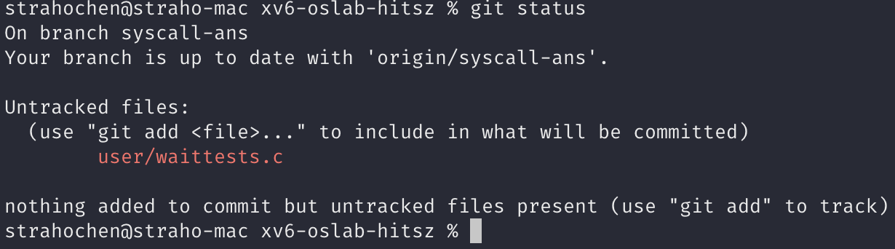

实验提交¶
实验一提交 实验报告 和 实验代码(只提交commit.patch文件) 。
1 实验报告会纳入评分（虽然不多）¶
实验报告要求 回答实验中的问题，并写出实验设计思路和运行结果 。
实验报告也是证明实验是独立完成的重要依据，有分数追求的大佬（juanwang）们不要只放代码和指导书的截图。
2 实验代码(只提交commit.patch文件)¶
不需要提交完整的代码包，只需要提交commit.patch文件即可，操作步骤如下：
- 在完成实验之后，将当前分支上的所有更改进行提交（commit，具体方法参考git使用教程）
- 在仓库的目录下使用
make diff命令导出更改文件（commit.patch） - 将 生成的commit.patch文件 与 实验报告 一起打包提交到作业提交平台即可
在实验过程中，大家注意保存好自己的代码，保存代码的两个方法：
（1）把整个xv6-oslab23-hitsz目录打包，然后用scp或者mobaXterm工具的sftp拷贝出来，自行保存好整个工程文件，以备下次实验使用。
（2）强烈推荐 将代码提交到自己的Github/Gitee等代码托管服务器上，具体操作系统详见将代码发布至自己的远程仓库。
3 git使用教程¶
git作为开发者常用的开源分布式版本控制系统，在使用远程仓库进行开发时具有不可或缺的作用。
这里有详细的Git使用教程 ：“Learning Git Branching” ，https://learngitbranching.js.org/?locale=zh_CN
为了帮助大家更好的使用git，我们编写了一下文档 用于初学者的入门 ，如果你已经使用过git，并长期将其作为自己的开发利器，那么你可以直接跳过此部分进行实验。
安装git¶
如果你使用的是学校提供的实验平台进行实验，那么我们已经在上面安装好了git，你可以直接跳过安装，进行配置和使用。
以下只以apt为例，如果你开始使用yum或pacman等包管理器和对应的Linux的发行版，我们相信你已经具备相应的能力去安装软件 (=
sudo apt update
sudo apt install git
配置git¶
在使用git之前需要进行配置：
git config --global user.name "your name"
git config --global user.email "your email"
上述的--global选项并不意味着你的信息会被该机器的所有使用者都知晓，这是针对用户所有仓库的设置，如果你是某台机器的管理员，并长期一个人使用它，那么你可以尝试--system选项，不过我们不建议这么做...
拉取仓库¶
git clone https://xxxxx.git
使用时请将clone后面的url进行替换，如果你使用的是Gitee，那么你将可以在下面图片的位置获得仓库的url。
查看分支¶
git branch
获取远程仓库更改¶
如果远程仓库的更改为新的分支创建，那么你需要fetch分支：
git fetch
如果远程仓库的更改不涉及分支创建，那么你可以在你需要获取更改的分支进行pull：
git pull
提交本地更改至远程仓库¶
当你在本地进行了更改之后，需要讲本地修改同步到远程，那么需要进行commit和push：
- 首先将本地的更改添加到暂存区
git add .
- 对本次提交的改动进行描述，也就是添加commit日志
git commit -m "本次提交的改动描述"
良好的commit日志有助于别人快速的了解你的工作，并且便于后续的版本管理和仓库的维护。如果你想学习如何写好commit日志，我们建议你查看阿里巴巴高德地图相关部门已有的一套git commit规范。
- 在编写好commit日志之后，我们只需要进行push即可将更改和日志提交到远程仓库
git push
切换分支¶
git checkout branch-name
例如切换到util分支：
值得注意的是：如果你在当前分支有改动未提交，切换到其他分支时，如果目标分支与当前分支的改动没有冲突，那么，当前分支的改动会直接移动到目标分支；反之会切换分支失败，命令行应该会有相应提示。
我们建议大家养成先commit再切换分支的习惯，如果你 不想提交当前更改，同时又有切换分支的需求 ，那么请看下面关于储藏更改的介绍。
储藏更改¶
git为开发者提供储藏当前分支的所有更改（默认情况下不包括新建文件，因为git stash只暂存git已追踪的文件更改）的方法，这种方法称为git stash。
git stash
当你需要重新调出原来的更改时，需要：
git stash pop
相信大家应该通过pop已经猜到了git statsh的储藏方式就是将更改压入一个栈中，所以理论上你可以多次压栈并依次弹出，但是我们不建议这么做。
需要说明的是，git stash只会将更改暂存到本地，不会提交到远程仓库上，所以还是需要git push。
当有了git stash，我们可以将更改储藏，然后再切换分支，即可满足上面切换分支当中提到的特殊需求。
查看仓库状态¶
git status
通过上面的命令可以查看仓库的状态，如果此时存在没有提交的更改，git会提示你：
